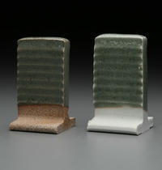
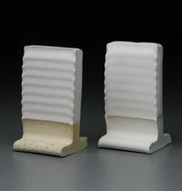
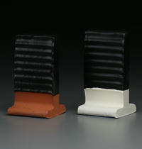
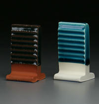
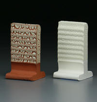

Mamo White Matt

| Material | Amount |
|---|---|
| Custer Feldspar | 25 |
| Dolomite | 20 |
| Minspar 200 | 20 |
| Calcined Kaolin | 15 |
| Whiting | 5 |
| EP Kaolin | 10 |
| Whiting | 5 |
Chow Blue Celadon
| Material | Amount |
|---|---|
| Custer Feldspar | 50 |
| Silica | 24 |
| Barium Carbonate | 16 |
| Whiting | 6 |
| EP Kaolin | 4 |
Translucent Base
| Material | Amount |
|---|---|
| Neph Sye A270 | 44 |
| Silica | 13 |
| Whiting | 7 |
| Zinc Oxide | 13 |
| EP Kaolin | 7 |
Steve's Blue-Green Celadon

| Material | Amount |
|---|---|
| Minspar 200 | 35 |
| Silica | 26 |
| Whiting | 14 |
| Zinc Oxide | 11 |
| Wollastonite | 9 |
| EP Kaolin | 5 |
V.C. Opaque Satin

| Material | Amount |
|---|---|
| Neph Sye A270 | 12 |
| Ferro Frit 3124 | 72 |
| Silica | 10 |
| EP Kaolin | 6 |
V.C. Vampire Red

| Material | Amount |
|---|---|
| Silica | 28 |
| Mahavir Potash Feldspar | 26 |
| Whiting | 16 |
| Barium Carbonate | 5 |
| Soda Ash | 5 |
| Fusion Frit 367 | 5 |
| EP Kaolin | 4 |
| Kentucky OM #4 Ball Clay | 4 |
Haynes Satin

| Material | Amount |
|---|---|
| Neph Sye A270 | 45 |
| Dolomite | 10 |
| Whiting | 8 |
| Amtalc-C98 Talc | 7 |
| Bentonite | 2 |
Woo Yellow

| Material | Amount |
|---|---|
| Minspar 200 | 34 |
| Barium Carbonate | 25 |
| Zircopax | 15 |
| Dolomite | 12 |
| EP Kaolin | 7 |
| Silica | 7 |
V.C. Satin Doll Black

| Material | Amount |
|---|---|
| Redart | 40 |
| Amtalc-C98 Talc | 15 |
| Neph Sye A270 | 15 |
| Barium Carbonate | 10 |
| Silica | 10 |
| Whiting | 10 |
V.C. Lavender Mamo
| Material | Amount |
|---|---|
| EP Kaolin | 26 |
| Lithium Carbonate | 22 |
| Chrome Oxide | 2 |
RISD Lithium Blue

| Material | Amount |
|---|---|
| Silica | 52 |
| Lithium Carbonate | 26 |
| EP Kaolin | 11 |
| Copper Carbonate | 3 |
| Whiting | 3 |
| Bentonite | 1 |
| Bone Ash | 1 |
Kulisek Satin Matt G-1

| Material | Amount |
|---|---|
| Minspar 200 | 58 |
| Whiting | 24 |
| EP Kaolin | 16 |
| Tin Oxide | 2 |
Aventurine

| Material | Amount |
|---|---|
| Silica | 40 |
| Borax | 39 |
| Red Iron Oxide | 15 |
| Boric Acid | 2 |
| Barium Carbonate | 2 |
| EP Kaolin | 1 |
Katrina's Excellent Black
| Material | Amount |
|---|---|
| Ferro Frit 3195 | 42 |
| EP Kaolin | 23 |
| Wollastonite | 13 |
| Silica | 10 |
| Mason 6600 black stain | 5 |
| Bentonite | 2 |
Stokes C

| Material | Amount |
|---|---|
| Neph Sye A270 | 58 |
| Barium Carbonate | 21 |
| Kentucky OM #4 Ball Clay | 7 |
| Silica | 5 |
| Lithium Carbonate | 4 |
| Bentonite | 2 |
Water Blue
| Material | Amount |
|---|---|
| Ferro Frit 3110 | 77 |
| Silica | 10 |
| EP Kaolin | 7 |
| Copper Carbonate | 6 |
| Gerstley Borate | 5 |
Lisa Orr's Beautiful Deep Blue

| Material | Amount |
|---|---|
| Ferro Frit 3110 | 67 |
| Soda Ash | 16 |
| Gerstley Borate | 10 |
| Silica | 8 |
| Copper Carbonate | 6 |
| EP Kaolin | 5 |
| Bentonite | 2 |
| Cobalt Carbonate | ⅓ |
New Gill Blue

| Material | Amount |
|---|---|
| Ferro Frit 3124 | 40 |
| Gerstley Borate | 28 |
| Silica | 19 |
| Minspar 200 | 5 |
| EP Kaolin | 5 |
| Copper Carbonate | 3 |
Burkett SDSU White Crawl Glaze
| Material | Amount |
|---|---|
| Gerstley Borate | 46 |
| Magnesium Carbonate | 31 |
| EP Kaolin | 18 |
| Zircopax | 5 |
| Borax | 3 |
Nick's (Base) Yellow Orange

| Material | Amount |
|---|---|
| Ferro Frit 3124 | 40 |
| Gerstley Borate | 28 |
| Silica | 19 |
| Minspar 200 | 5 |
| EP Kaolin | 5 |
| Copper Carbonate | 3 |